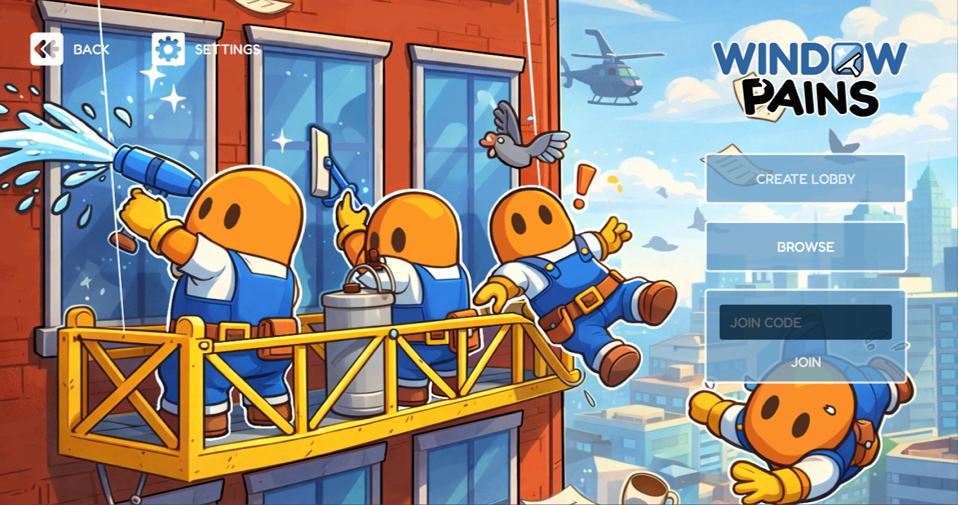
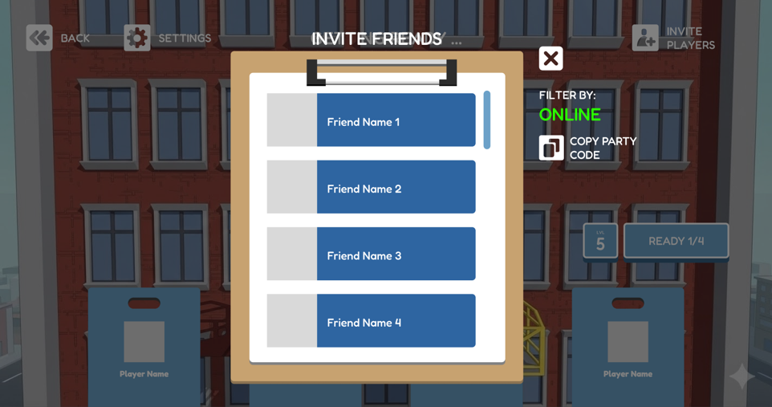
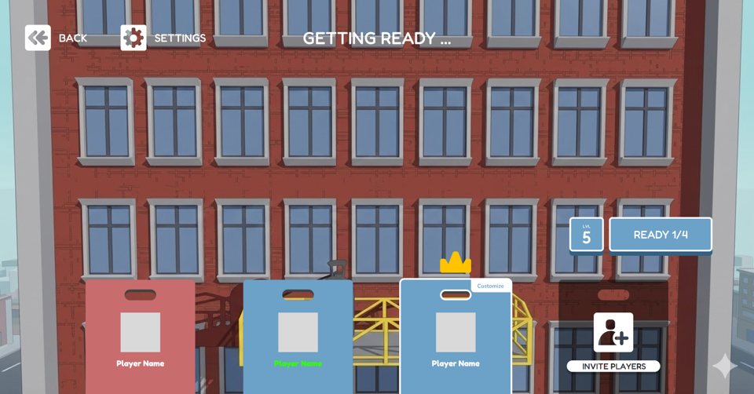
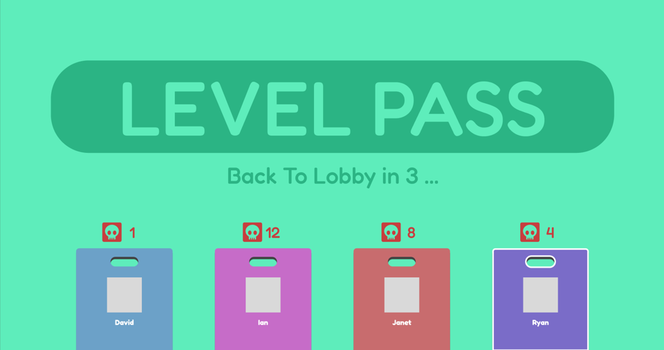

Unity Game Engine, Figma, Adobe Photoshop, Adobe Illustrator, Bandlab, Cakewalk, Github, Visual Studio Code
Currently, I am developing a new game titled Window Pains, a multiplayer co-op party experience inspired by games like Overcooked! and Mario Party.
In this project, I am responsible for sound design, music composition, and UI/UX design.
The music is designed to be high-energy, playful, and atmospheric, capturing the game’s balance between openness and chaotic fun.
Visually, both the game and its interface embrace a lighthearted, stylized aesthetic, featuring elements such as stickers, clipboards, rounded typography, and vibrant color palettes.
This cohesive design approach reinforces the game’s engaging and energetic tone while enhancing the overall user experience.



